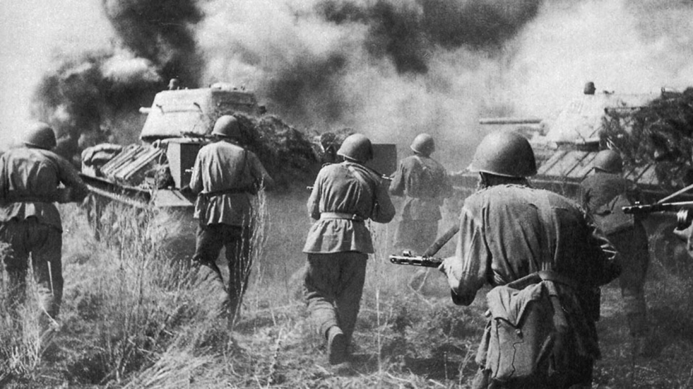

The Battle of Kursk
The Battle of Kursk, which took place from July 5 to August 23, 1943, was one of the largest and most significant confrontations of World War II. It was fought between Nazi Germany and the Soviet Union near the city of Kursk in western Russia. The battle marked a turning point on the Eastern Front, with the Soviets decisively defeating the Germans and initiating a series of offensives that would ultimately lead to the downfall of the Third Reich.
The German offensive, codenamed Operation Citadel, aimed to eliminate a large Soviet salient in the Kursk region, which posed a threat to German-held territory. The Germans amassed a formidable force, including thousands of tanks and aircraft, for the assault. However, Soviet intelligence had intercepted German plans and prepared a massive defensive operation in response.
The battle began with a German offensive in the north and south of the Kursk salient, but the Soviets had heavily fortified their positions and deployed extensive minefields and anti-tank defenses. The German advance quickly bogged down under withering Soviet defensive fire. In the south, the Soviets launched a preemptive counteroffensive, Operation Kutuzov, which pushed back the Germans and threatened to encircle their forces.
In the following weeks, the battle raged on with ferocious tank battles and intense fighting on the ground. The Soviets, under the leadership of Generals Georgy Zhukov and Konstantin Rokossovsky, launched a series of counteroffensives, including Operation Rumyantsev, which further weakened the German positions. By late August, the Germans were forced to retreat, having suffered heavy losses in men and materiel. The Battle of Kursk ended in a decisive Soviet victory and marked a turning point on the Eastern Front, shifting the momentum of the war in favor of the Allies.
Battle Location
| Nazi Germany | Soviet Union | |
|---|---|---|
| Leader | Erich von Manstein | Georgy Zhukov |
| Strength | 780,000 | 1.3 million |
| Tanks and artillery guns | 3000 | 3600 |
| Losses | 200,000 | 800,000-1 million |
| Victorious? | No | Yes |